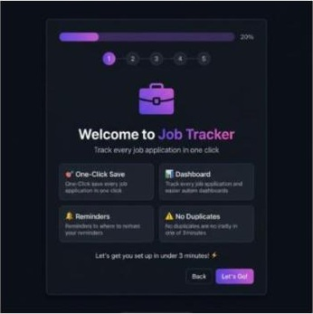

Chrome extension, open source
Job Application Tracker
Saves a job application to your own Google Sheet in one click. No account, no server, no database. The data goes from the page you are on straight to your Drive, so I never see it.
- Extraction fallback DOM, JSON-LD, og:tags
- Boards supported LinkedIn, Indeed, Greenhouse, Lever
- Backend None. Apps Script webhook
JavaScript, Manifest V3, Google Apps Script